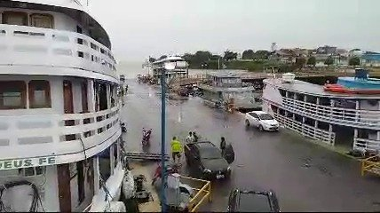

00:00:10.067
Movimento de pessoas e veículos no cais molhado, enquadrado entre os conveses brancos de dois barcos atracados.
Porto de Parintins (AM) · confirmado
Na abertura da live de 17 de abril de 2018, o apresentador informa que chegou ao porto de Parintins em uma viagem iniciada em Santarém com destino a Manaus.
Transcrição · 00:00:00 | 00:00:08 | 00:00:16
Turismo Aqui — quadro de vídeo publicado no YouTube
Referência 1